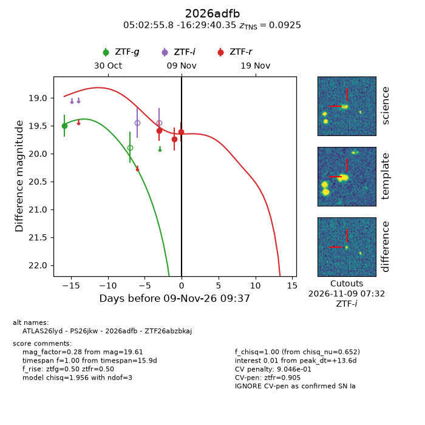
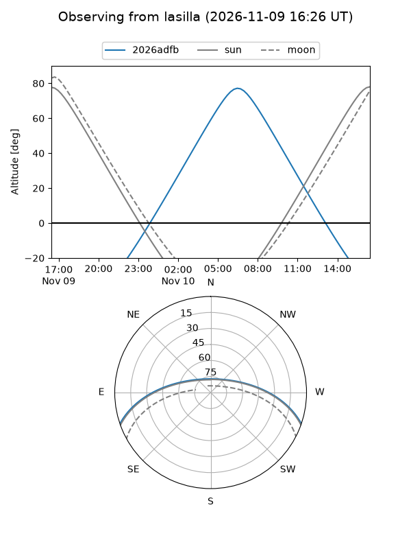
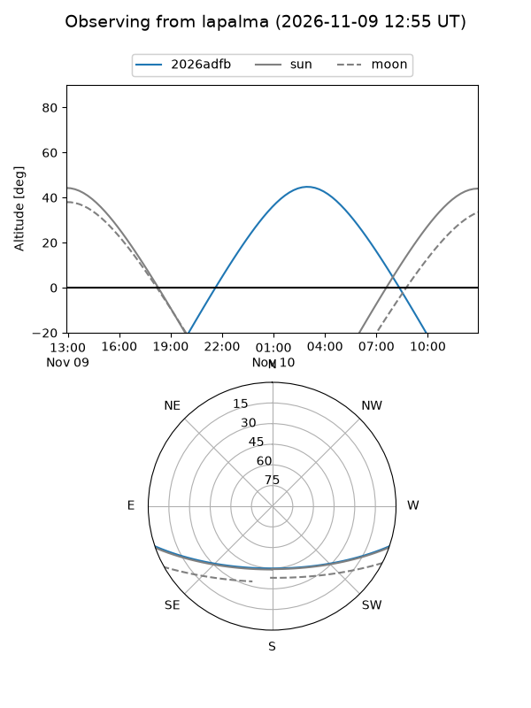
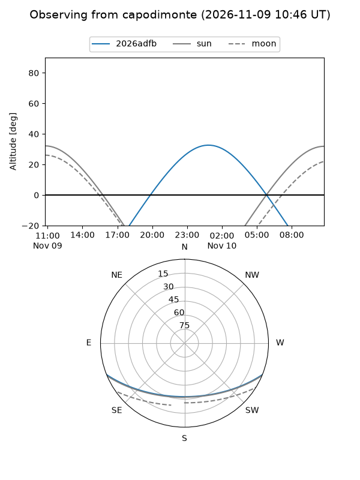
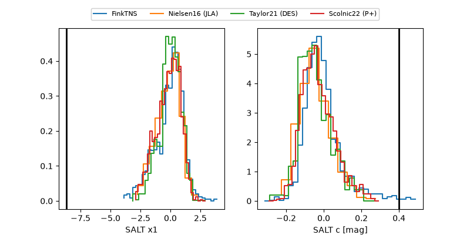

2026adfb
Target 2026adfb at 2026-11-09 09:40
Aliases and brokers:
FINK-ZTF: ztf.fink-portal.org/ZTF26abzbkaj
Lasair-ZTF: lasair-ztf.lsst.ac.uk/objects/ZTF26abzbkaj
ALeRCE-ZTF: alerce.online/object/ZTF26abzbkaj
YSE-PZ: ziggy.ucolick.org/yse/transient_detail/2026adfb
TNS name: wis-tns.org/object/2026adfb
Direct TNS query: direct search
alt names
ZTF26abzbkaj (ztf,fink_ztf)
2026adfb (tns,yse)
ATLAS26lyd (atlas)
PS26jkw (panstarrs)
Coordinates:
equatorial (ra, dec) = 75.7324,-16.49454
equatorial (HMS+DMS) = 05:02:55.79,-16:29:40.35
galactic (l, b) = (216.5081,-31.23624)
Flags:
TNS type: SN Ia
TNS redshift: 0.0925
likely cv: !!
CV pen: 0.9046023534035569
peak dt: +13.6
Photometry:
last ztfg=19.50, ztfr=19.61
1 ztfg, 3 ztfr detections
Lightcurve

Visibility



Additional plots
